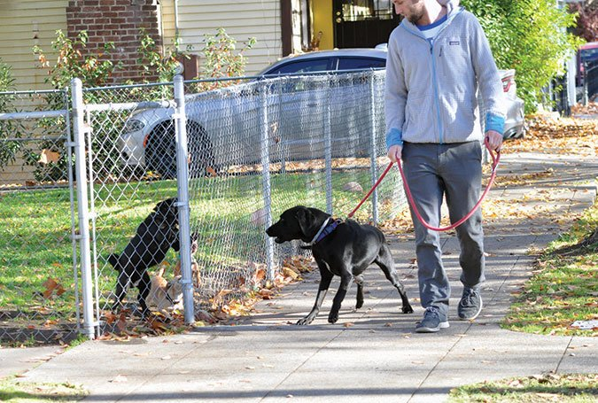
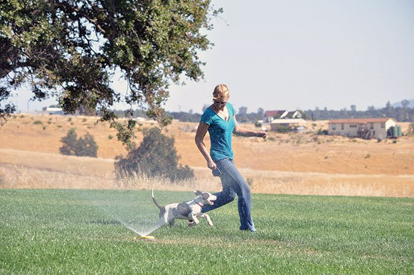

The Emotional Lives of Dogs
An excerpt from Denise Fenzi's newest book, Beyond the Basics: Unlock Your Dog's Behavior, explains how your dog's emotions affect his ability to learn (and your ability to teach!).
Traditionally, dog trainers have spent little or no energy considering a dog’s emotions when training or changing behavior; indeed, trainers or owners who did talk about emotions were often ridiculed and accused of anthropomorphizing (the process of projecting our emotional processes on animals with no consideration for the animal’s capacity or the reality of the situation). Instead, dog trainers have focused almost exclusively on how they could change a dog’s behavior through the principles of operant conditioning. Training was a quid pro quo equation based on the idea that dogs will maximize their well being. In other words, dogs will do things that benefit them and avoid things that harm them. If a dog’s behavior gets him things that he likes, then he will do more of those behaviors. And if a dog’s behavior causes things he doesn’t like to happen, then he will do less of those behaviors.
That approach makes training sound simple and logical. If you give the dog treats for sitting nicely and push him down when he jumps up, then we should see more sitting. Approached in this manner, it would be simple to list all the random problem behaviors encountered by dog owners and then determine appropriate rewards for good behavior and appropriate punishments for bad behavior. All of the problems will go away and there would be happiness. Right?
Well, no – for two reasons. First of all, operant conditioning assumes a rational participant, and when emotions come into play, reason often goes out the window.
And second, strong emotions often cause specific behaviors to happen, not by choice, but as a side effect of the emotion itself. For example, the emotion of fear often makes dogs pace back and forth, or bark, or pant and whine excessively, or jump up on their owners, clinging to them and looking for security. Because pushing them off can exacerbate their feelings of fear and clinginess, this “solution” for jumping can actually make the jumping behavior even more pronounced. Worse, it can stop the jumping, only for it to change to another problematic behavior like submissively urinating. Recognizing that the emotion of fear is driving the behavior of jumping up should dramatically change how we handle the problem behavior.
How Emotions Impact Dogs’ Behavior
When emotions are driving behavior, the dog cannot simply choose to stop doing the behavior without ramifications. The reality is that animals (including people) are quite often not rational participants. If that sounds counterintuitive to you and you believe that behavior is largely chosen rather than the result of emotional experiences, perhaps a few examples will help you understand.
The police call and tell you that your son has been in a serious automobile accident and is in the hospital. At that moment, are you in a position to learn new things? Could you choose the behavior of sitting quietly at the table, reading a newspaper while you wait for more information? Would you be able to play a game of chess with your spouse? Of course not! Your fear for your son dominates all rational behavior and overwhelms your capacity for conscious thought.
Instead, it’s likely that you will pace, or not move at all because you’re frozen in fear. You will not be able to listen to conversations that are not about your son because your emotions will not allow it. You may cry (not by choice but as a human expression of fear), you may scream, or you may appear catatonic. But you cannot choose not to be afraid because you do not choose your emotions; you simply experience them, even when you would rather not.
Let’s consider a few more emotions.
You discover that your spouse has been having an affair and you’re angry beyond reason. Although you had planned to spend the evening catching up on some work that you brought home from the office, there is no chance for that now. Every time you pick up the folders, your mind immediately goes back to the reality of your private life and you drop the papers to return to angry pacing, your fists balled up and your breathing heavy and erratic.
You cannot work. You cannot learn. You can barely think, let alone make any decisions or concentrate. You know that if you see your spouse at that moment, you will react badly out of pure rage. You leave the house so you will not be home when he gets there, allowing you to avoid the situation rather than having to show self control that you don’t think you can muster.
Over time, as you come to accept your spouse’s infidelity, you find that your anger is being replaced by a deep sadness that you cannot shake. And yet you find yourself unable to concentrate, to work, or even to do the most basic of life functions like eating and sleeping. You are becoming depressed and once again your emotions are controlling your behavior, very much against your will. You want your rational life back but you can’t seem to get there.
Even Happy Emotions Interfere with Learning
The above examples focus on unhappy emotions like fear, rage, and sadness. So maybe negative emotions can severely impact learning and our choice of behaviors, but how about happy emotions? Could those possibly impact our outward expression of our behavior? Yes, they can.
Let’s say you just won the lottery – 10 million dollars! You are excited! Beside yourself with joy! You cannot wait to tell all your friends! But first, you’ll need to complete some paperwork and answer some questions. What is your social security number? How much did you claim on last year’s tax return? Do you want to take the money as a lump sum or over twenty years? You find yourself struggling to participate in this very important interview. Heck, you can barely remember your own name, let alone your social security number or the definition of an annuity.
Fortunately, the lottery secretary has seen this before, so she gives you lots of time to calm down; indeed, she suggests that you go get a friend to help you because she’s pretty sure you’ll get almost everything wrong if you try to do the interview alone. So while your friend writes down a list of required documents and decisions to be made, you run around the house, occasionally letting out screams of excitement and leaping around, looking a lot like a three-year-old on Christmas morning. You may be experiencing a wonderful emotion for a wonderful reason, but you’re not functioning well because strong emotions block rational thought.
Examples of Emotional Interference in Dogs
Now let’s consider our dogs.
A large and aggressive dog lunges towards your dog at dog training school. Your dog is not physically injured, but he is absolutely terrified by the encounter. He can’t stop looking where the dog had been standing. Even though he had been doing fine in his training up until this point, now he simply stands catatonic in the middle of the room.
He is not in a position to learn because he does not feel safe. More so, he cannot simply choose to feel better any more than you can, even when he realizes that the other dog is no longer present. From the handler’s point of view, the threat is gone, so the handler may well expect the dog to get on with his training. But in the same way that a human who is almost attacked on the street cannot simply move on after the police come and arrest the person, your dog cannot simply move on either. His emotions must be processed before rational thought can take over again. How long that takes is a function of the animal experiencing them, not the desires of the owner.
How about a happy emotion like joy? Does that emotion also block rational thought when our dogs experience it? Yes.
Your dog was just reunited with you after two weeks in a boarding kennel. He is overjoyed to see you again and can’t stop jumping up on you with happiness! In fact, he is so excited that he can’t see how irritated you are becoming about his muddy pawprints on your clothes. Now you’re both under the influence of emotions: your dog is happy to be reunited with you, and you’re frustrated because your clothes are getting dirty. At that moment, it’s likely that neither one of you is going to make very good decisions.
When Emotions Fuel Our Dogs’ Learning
Emotions don’t always prevent a dog from learning. Sometimes, your dog’s emotions may actually set him up for a great learning situation. For example, let’s say that your dog is left alone all day long with nothing to do. He is bored and desperately looking for something to do, so he starts to dig the dirt out of your houseplants. Later, he teaches himself how to climb up your pantry shelves to where you keep the dog biscuits.
This dog is in a position to learn – in fact, learning solves the feeling of boredom – but you’re not there to teach him something useful. So instead, he learns about wrecking your house and stealing dog biscuits. In this case, the feeling of boredom, and your dog’s desire to eliminate that feeling, leads to problematic learning.
In all of these examples, both human and canine, how the individual is feeling is the driving force behind the expressed behavior. Since we do not choose what we feel at any given time, we’re stuck with our emotions, whether we like them or not! And since strong emotions cause behavior to happen – whether we like those behaviors or not – we’re stuck with them, too. If you choose to ignore the emotions and focus solely on the behaviors, you’re likely to get nowhere in your attempts to create change. Worse yet, you might actually exacerbate the problem.
The fearful dog may try to run away and refuse to come back, irritating the owner who knows that the aggressive dog left the dog school an hour ago. The excited, happy-to-see-you dog can’t settle down! And the bored dog is wrecking your house. In all of these examples, the solution lies in addressing the emotion, not the behavior. Solve the emotion and you solve the behavior.
When an animal is in a state of emotional overload, we say that the dog is “over threshold.” The dog’s emotions are so great that the dog can no longer function effectively. In short, the dog cannot learn very well at that time. When a dog is over threshold, operant conditioning works very poorly because the dog is not rational at all. Only when a dog is “under threshold” is he capable of conscious thought, and only then can training take hold.
Adults, Pre-Verbal Children, and Dogs
In the above human examples of strong emotion, we discussed adults who have learned how to moderate their emotions, accept the realities of day-to-day existence, and find ways to cooperate even when they don’t want to. Because of this experience, adults are not likely to be completely overwhelmed with emotion very often. So how do these examples change when we talk about a two-year-old child instead?
As every parent knows, toddlers experience (and express) their emotions intensely and frequently. Everything is new and overwhelming to the toddler, and as a result, they have neither the developmental capacity nor the motivation to modify their emotional expression. Toddlers are routinely supervised because we know that under the influence of strong emotions, they will make really bad decisions like running out into the street after a ball, lashing out and hitting people, or grabbing attractive but dangerous items. In fact, we manage their behavior by holding their hands when we are walking on a busy street, or we avoid the situation altogether until the child is older and more able to stay reliably “under threshold.”
And your dog? Well, research into the cognitive capabilities of dogs shows that dogs are roughly equivalent to a two-year-old child. You can assume that your dog’s capacity for controlling his behavior is on par with that of a toddler.
Yes, your dog can be trained to perform specific behaviors (come when called, stay, wait at the door, toilet outside). And yes, your dog can also learn not to perform other behaviors (digging in your garden, barking in his crate, pulling on leash). However, you’ll find that this training goes a lot better when the dog is not under the influence of overwhelming emotions that block effective learning. And, like with a two-year-old child, there is also a place for recognizing when your expectations are not reasonable, making management the most logical solution. This is why we leash our dogs instead of relying on training when we walk them near busy roads.
The Ideal Emotional State for Learning
Does this mean we want to work with dogs who are devoid of emotion, staring vacantly into space? Absolutely not! We want to train a dog who is engaged with us! We want to train a dog who is happy, alert, focused, and motivated by whatever rewards we might have to offer. Dogs, like people, are curious and want to learn! We want a dog who is emotionally ready, willing, and able to learn!
When You Ignore Your Dog’s Emotions
There are two significant effects of ignoring a dog’s emotional state. First, if the problem behavior is a direct result of the emotional state, then attempting to address the behavior directly without addressing the underlying emotion will create new problems.
For example, if your dog is afraid to go for a walk because of the dogs who lunge and bark at him from behind their fences, you could attach the leash before you leave the house so that he has no choice but to come along. Now what happens? Well, after a few days, you may find that when you call him to attach the leash, he’s nowhere to be found. Now you have two problems: a dog who is afraid to be walked, and a dog who will not come when called.
If you persist, trap him in the corner, attach the leash, and pull him out the door, then what? The next time you trap him in the corner and reach for his collar, he may well pee on your floor or snap at your hand. Now you’re up to three problems. How many problems do you plan to create before you simply accept that your dog is fearful on his walk and address the root emotional problem?
If you persist, trap him in the corner, attach the leash, and pull him out the door, then what? The next time you trap him in the corner and reach for his collar, he may well pee on your floor or snap at your hand. Now you’re up to three problems. How many problems do you plan to create before you simply accept that your dog is fearful on his walk and address the root emotional problem?
Now learn about your dog’s body language, and how you can learn more about what emotions your dog is feeling!Editor’s Note
Denise Fenzi is the founder and head trainer at the Fenzi Dog Sports Academy, an online school dedicated to providing high-quality instruction for competitive dog sports. Denise has competed in a wide range of dog sports, titling dogs in obedience (AKC and UKC), tracking (AKC and schutzhund), schutzhund (USA), mondioring (MRSA), herding (AKC), conformation (AKC), and agility (AKC). Although Denise has found success as a competitor, her passion lies in training dogs – and teaching people how to train their dogs. To that end, she’s written a number of books on dog training, including a series on dog sports skills (co-authored by Deborah Jones, PhD).
The book we have excerpted here is Fenzi’s newest title aimed exclusively at pet dog owners and pet dog trainers. We are grateful for the opportunity to share its first chapter here. If you are interested in purchasing this or any other of Fenzi’s books, visit her website. – Nancy Kerns
Denise Fenzi is the founder of Fenzi Dog Sports Academy, an online school dedicated to the most current and progressive training methods for competitive dog sports.
Writer : Denise Fenzi